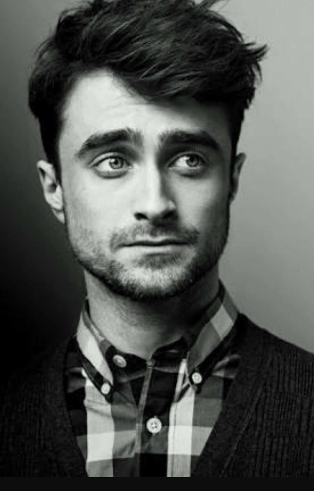

Дэниел Рэдклифф - английский актер, который стал известным во всем мире, как парень, сыгравший роль Гарри
Поттера, в серии фильмов, основанных на чрезвычайно популярных книгах Джоан Роулинг.

В биографии Дэниела Рэдклиффа есть много интересных фактов:
Дэниел никогда не смотрит передачи, в которых он принимает участие и никогда не читает о себе прессу или
отзывы о фильмах, в которых он снимался
Дэниел занимается благотворительностью. Он поддерживает один из детских домов Лондона для смертельно больных
детей
перерыв между съемками второй и третьей части Гарри Поттера был по той причине, что родители настояли на
посещении актером школы в обычном режиме
после подписания контракта на съемку в пятой части Гарри Поттера актер стал самым богатым подростком
Великобритании. На рождество и свой день рождения всегда просит поклонников вместо подарков пожертвовать
деньги для этих детей
сам актер совершенно не любит играть в футбол, но при этом является большим фанатом футбольного клуба Фулхэм